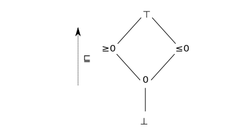

神游窈冥昏默之乡是一件严肃的事。
全是私货，个人理解。
什么叫抽象呢？其实是“减少描述符号，从而减少约束导致值域扩大”的过程。譬如：
$\{1,2,3\}$是很具体的，可以取1,2,3。然后我们就可以对其抽象一下为$[1,3]$，此时只剩下了两个数（两个端点），但范围扩大了不能精确描述值的选取了，但取值仍是符合抽象的条件（在[1,3]内）。我们可以继续抽象为$”+”$，直接抽象成一个符号，表示取值都是正数。这样符号更少了，也导致范围更大了。
- 我们用一个完全格(complete lattice)去描述一个concrete world：
其中，$\mathbb{I}$是讨论的取值范围，譬如可以是$N,Z,N^*$等等。而幂集上的子集关系就是一个天然的偏序。显然它是一个完全格。
- 然后我们也用一个完全格去描述一个abstract world：而且需要有一个单调的concretization function去描述它的具体化：$\gamma_b:\mathcal{B}^#\rightarrow\mathcal{P}(\mathbb{I})$。
以上只是初步定义。为什么要抽象？实际上，程序语义是可以近似和逼近的。我们其实要求抽象是concrete world的一个“sound abstraction”时，才比较有实用意义。假如我们就讨论简单的算术表达式这件事情。一个concrete domain上的语义如下：
然后一个sound的value domain abstraction要求是什么呢？书上给出如下：
加减乘除和交并这些二元运算符同理。
当然普通人例如我还是理解不了这一大堆奇怪的要求的，于是我决定把它实例化。
令$\mathbb{I}=\{-1,0,1\}$，也就是我们所有的取值都只考虑这三种。我们用符号来抽象它。即the sign domain。构造sign domain：
一共就5个元素。再构造$\mathcal{B}^#$上的一个偏序关系：

这里对这个关系可以理解为抽象范围的包含关系。（显然$\leq 0$是包含$<0的。)而最大元理解为”unknown”，即所有元素都满足。而最小元理解为不可满足。
然后构造$\gamma_b$映射：
然后构造运算。其实运算就按照普通理解的方法构造：$(\geq 0)+_b^#(\geq 0)=(\geq 0)$，$(\leq 0)+(\geq 0)=\top_b^#$，$\top_b^#+0=\top_b^#$，$\perp_b^#+(\geq 0)=\perp_b^#$……都不用特殊说明。
然后我们来验证这个abstract domain是concrete domain的一个sound abstraction。
- 对于取值集合，很容易就找到对应的abstraction。譬如$\{0,1\}\rightarrow (\geq 0)$，$\{-1,1\}\rightarrow\top_b^#$，$\{0\}\rightarrow 0$。显然就有$c\subseteq \gamma_b(c_b^#)$。
- 对于$[c_1,c_2]$，也很容易找到对应的abstraction。譬如$[-2,1]\rightarrow\top_b^#$，$[1,2]\rightarrow(\geq 0)$，$[0,0]\rightarrow 0$。很显然也有$[c_1,c_2]\subseteq\gamma_b([c_1,c_2]_b^#)$。
- 然后加减整除，其实都挺显然有$\{x+y|x\in\gamma_b(X^#),y\in(Y^#)\}\subseteq\gamma_b(X^#+_b^# Y^#)$的。
其实看了例子就好理解一些。总之，我理解为“抽象”足以描述concrete world中的关系和运算，使得在抽象中运算后虽然会有约束损失，但仍然是正确的。
最后注意，$[c_1,c_2]_b^#,X^#$这些其实都是$\mathcal{B}^#$中的元素，只是对应不同的具象。
所以其实类型都是相似的。
说了半天还是抽象。